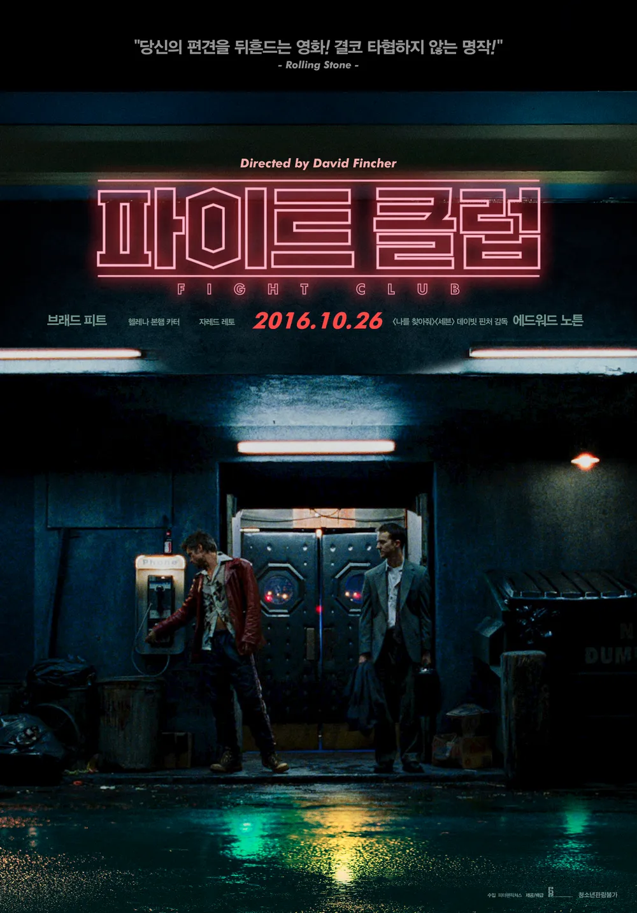
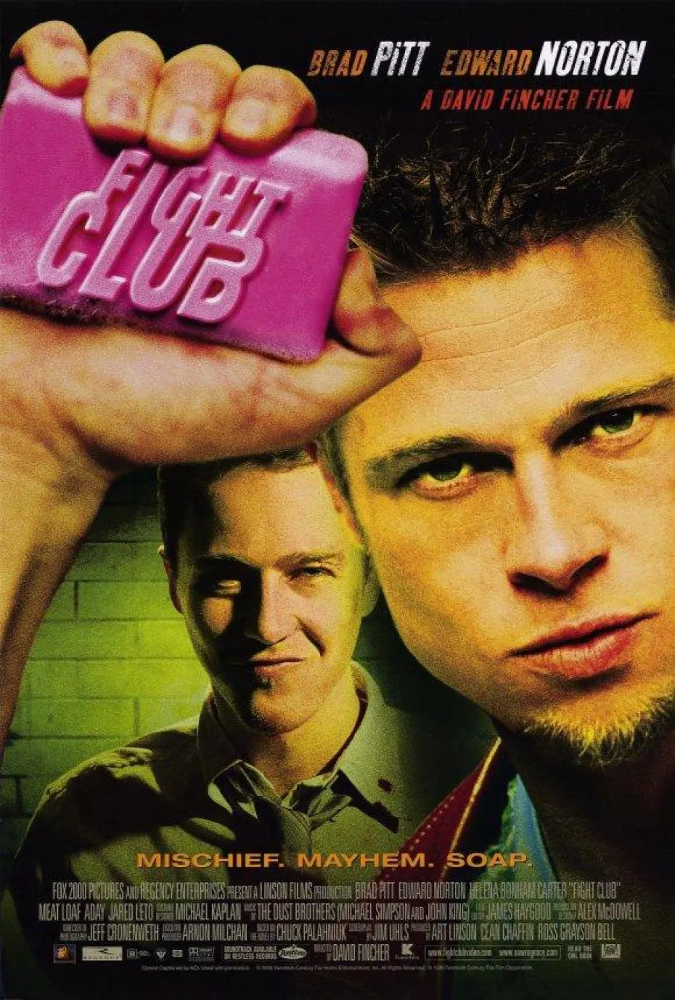

파이트클럽


줄거리 : 무료한 삶을 살던 주인공이 비범한 인물을 만나 비밀집단을 만들며 생기는 일
현대인들의 삶은 무수히 많은 불협화음이 동반됩니다.
주변 사람들이 무엇을 한다고하면 나도 해야할것같고..뭔가 뒤쳐져있는 것 같을때가 있습니다. 남의 눈치만 보다보면 내 스스로를 잃어버리기도, 무너질때도 있는 법이죠
이런 와중 현대인의 기본 소양은 두려움 없이, 흐트러짐 없이, 중요하지 않은 것들을 그냥 흘러가게 두는 능력이 아닐까요?
파이트 클럽은 그냥 내버려두는 방법, 인생에 대한 반란을 일으키는 법에 대한 영화입니다. 본적 없다면 보는 것을 추천합니다 메시지는 둘째치고 무엇보다 재밌습니다.